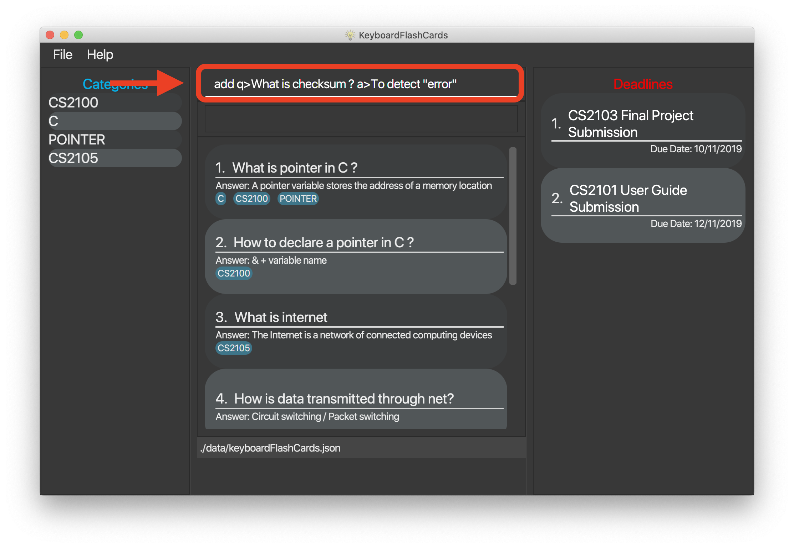

Introduction
This document details the various contributions that I have made to my team project, KeyboardFlashCards, done as part of a second-year software engineering module CS2103T.
My team consists of two year 4 Computer engineering students three year 2 Computer Science students(including myself). For our CS2103T 6 weeks Software engineering project, we were tasked to either enhance or morph a basic command line interface(CLI) desktop AddressBook 3. We chose to morph it into a study application named KeyboardFlashCards(KFC). It is a desktop study application which is targeting at computing students (in particular NUS computing students). Users can create FlashCards with question and answer; add categories to manage the cards, create schedules to plan their studies and also import and export the flashcards. The user interact with it using the CLI and has 17kLoC.
This is what our project looks like

Follow are my involvements to the project
-
I designed and wrote the code for
FlashCardswhich is the fundamental component for our application. -
I designed and wrote the code for
listandsearchfeature which allow the users to navigate between different flashcard list. -
I designed and wrote the code for the GUI for our application, ensuring the UI is working.
-
I designed and wrote the code for
themefeatures which allows the user to change the theme based on their mood.
The following sections illustrate some of these enhancements with more detail, as well as the relevant documentation I have added to the user and developer guides.
Please note the following symbols and format used in this document
| This symbol indicates important information |
| A tip or suggestion |
| A cautionary piece of advice |
add: A highlight(called a mark-up) indicates that this is a command that can be inputted into the command line and executed by the application.
Summary of contributions
-
Enhancement #1: I added the Flashcard features.
-
What it does: FlashCard is the basic building block for our application. FlashCards features allows the user to
add,edit,delete,clearflashcard in the system. -
Justification: In the event that the users want to add flashcards, the
addcommand allow the user to add questions and answer. They can choose to add categories to the new flashcard or they can add on to existing ones using theeditcommand. If the user wants to change the answer for certain question as they find better answer in a later time. They can useeditto update the answer. -
Highlights: There is no fixed order for the attributes while adding FlashCards. User can choose to input question before answer or vice versa. This gives user more flexibility for the user to add FlashCards. While editing a particular FlashCard, user can select it using the index corresponding to that particular FlashCard that is displayed on the FlashCards list on the dashboard. In addition to
edit, user only need to indicate the field(s) he or she wants to change. This brings convenience to the users as they do no have to retype everything again. The implementation is easy as these were adapted from the AddressBook 3. -
Credits: [AddressBook 3]
-
-
Enhancement #2: I added the
listandsearchfeatures as part of FlashCard feature.-
What it does:
listandsearchhave similar function, they allows the user to view/find FlashCards that match the keyword. -
Justification: The default FlashCards list displayed all FlashCards in the system. Sometimes, user might not always want to view all the FlashCards. If they just want to review FlashCards for certain category, they can use
listfollow by the category. Then user can view FlashCards under the chosen category. When the date build up, there will be many FlashCards in the system. If the users just want to view a particular FlashCard but could not remember where it is, they can use the search function to search for the FlashCard they are looking for.listandsearchbring great ease for the users to navigate between the different FlashCard lists. -
Highlights: Both
listandsearchsupport multiple keywords. If the users want to revise for two or more categories in one glance, they can typelistfollow by the categories they want. The FlashCard list will show all FlashCards in those categories. Similarly,searchsupport multiple keywords search.searchis a general searching for both question and answer through all the FlashCards. Additionally, I also implemented search by questionsearchqnand search by answersearchans.The users can use these to search for particular field. These increase our product diversification and cater to different needs from the users. -
Credits: [AddressBook 3]
-
-
Enhancement #3: I added the
themefeature.-
What it does: It allow the users to change theme. Currently, there are six themes available for the user to choose.
-
Justification: The default theme is dark theme. We expected the users to spend long time with our application when they start to use KFC to study and do revision. A single theme, might appear boring and plain in the long run. Therefore, I implemented this feature to allow the users to change color theme. This would allow the users to change theme depends on their mode.
-
Highlights: The changing of the theme is spontaneous when the command is executed. There is no need for the user to restart the application. The implementation was challenging as I have to trace the path for the logic to work. At the same time, I need to ensure that the application stores the changes made by the users so that when the users reopen the application, the theme will be the same as the moment the app was closed. In addition, I need the figure out how the GUI will response to the changes. The template for the css file used to implement different themes is from the AddressBook 3.
-
Credit: [AddressBook 3 - DarkTheme.css]
-
-
Enhancement #4: I designed and coded the flashcard panel for the test mode.
-
What it does: It is for test mode. It will show questions first when the user enter the test mode and shows the answer when the user type
ansin the test mode. After userrate/skipthe FlashCard, the next FlashCard will be shown. -
Justification: This feature is cooperated with the test mode that was designed by one of the team member Keith. In the test mode, the original FlashCard list is replaced by the test FlashCard panel that will only show the questions and answers for individual testing FlashCard. This feature makes the application more convenient and appealing to the users.
-
Highlights: This panel supports long questions or answer. Long question/answer will not be concatenated. Users can view long question easily using the scroll on th mouse.
-
-
Code contributed: [Functional code] [Test code] {give links to collated code files}
-
Other contributions
-
Project management
-
Managed releases
v1.2-v1.4rc(3 releases) on GitHub
-
-
Enhancements to existing features
-
Documentation
-
Community
-
Contributions to the User Guide
Given below are some sections I contributed to the User Guide. They showcase my ability to write documentation targeting end-users. |
(start of extract from User Guide)
Add new FlashCard: add q>QUESTION a>ANSWER [c>CATEGORY]…
This command allows to you to add a new FlashCard with question and answer.
add q>What is CS2103T a>Software engineering
You may also include the category for the FlashCard.
add q>What is CS2103T a>Software engineering c>CS2103T
a>, q> and c> are reserved as prefixes, If you want to include these in your question/answer put them in "" or otherwise to differentiate.
|
To add:
-
Type
add q>What is the use of checksum ? a>To detect "error"and press Enter. -
The result box will display the message: "New FlashCard added: What is the use of checksum ? Answer: To detect "error""

-
And you can check the new FlashCard has been added to bottom of the FlashCard list.

When multiple questions or answers prefixes in one add command, only input from the last appearance will be taken. For example, add q> 1+1 a> 2 q>Hi a>bye KFC will add a FlashCard with the question as Hi and the answer as bye.
|
Edit an existing FlashCard: edit INDEX {fields wanted to edit}…
This command allows you to edit the FlashCard with index corresponding to the
display list with 1 or multiple fields e.g: edit 7 c>CS2105
To edit:
-
Type
edit 7 c>CS2105and press Enter.
-
The result box will display the message: "Edited FlashCard: What is the use of checksum ? Answer: To detect "error" Categories: [CS2105]".

-
And you can see that the 7th FlashCard has been edited on the FlashCard list.

Delete FlashCard: delete INDEX
This command allows you the delete a
particular FlashCard with the index
show on the FlashCard list. e.g.
delete 7
To delete:
-
Type
delete 7and press Enter.
-
The result box will show the message: "Deleted FlashCard: What is the use of checksum ? Answer: To detect "error" Categories: [CS2105]"

-
And you can check the FlashCard list that the FlashCard has been deleted.

Clear all the FlashCard: clear
This command allows you to delete all the FlashCard in the storage.
To clear:
-
Type
clearand press Enter. -
The result box will show the message: -"Flash card has been cleared!"_ And you will see that all lists turn empty.

Search for FlashCards: search
The section will show you 3 methods to search for FlashCards. Keywords are case-insensitive.
| Current search function does not support fuzzy search, so remove punctuations when adding the FlashCards or include the punctuations for searching |
Either the question or the answer matches the keyword(s): "search KEYWORD(S)"
This command allows you to search for FlashCards with the question or answer matching the keyword(s). Multiple keywords are separated by a single space.
To search:
-
Type
search pointerand press Enter. -
The result box will show message: "2 flash cards listed!" and the FlashCard list will show the matching FlashCards
Question matching the keyword(s) only: searchqn KEYWORD(S)
This command allows you to search for FlashCards with the question matching the keyword(s). Multiple keywords are separated by a single space.
to search question:
-
Type
searchqn Cand press Enter. -
The result box will show message: "2 flash cards listed!" and the FlashCard list will show the matching FlashCards

Answer matching the keyword(s) only: searchans KEYWORD(S)
This command allows you to search for FlashCards with the answer matching the keyword(s). Multiple keywords are separated by a single space.
to search for answer:
-
Type
searchans nameand press Enter. -
The result box will show message: "1 flash cards listed!" and the FlashCard list will show the matching FlashCards
List all FlashCards: listall
This command allows you to lists all the FlashCards in the storage.
To listall:
-
Type
listalland press Enter.
-
The result box will show message: "Listed all Flash Cards".

-
And the FlashCard list will show all the FlashCards. You can move your mouse to the FlashCard list and scroll up and down to view the FlashCards.

List of category : list CATEGORY
This command allows you to list all FlashCards under one or multiple categories. Multiple keywords are separated by a single space.
to list category:
-
Type
list CS2105and press Enter. -
The result box will show message: "1 FlashCard is listed!" .

-
And the FlashCard list is updated.
Exit: exit
This command allows you to exit the application.
To exit:
-
Type
exitand press Enter. -
The application window will close by itself.
Change color themes: theme THEMENAME
This command allows you to change the theme of the app.
Follow are the current available themes
dark |
light |
pink |
blue |
hacker |
nus |
To change theme:
-
Type "theme hacker" and press Enter

-
The result box will show the message: "Theme changed to hackerTheme" and the theme will be changed.

(end of extract from User Guide)
Contributions to the Developer Guide
Given below are sections I contributed to the Developer Guide. They showcase my ability to write technical documentation and the technical depth of my contributions to the project. |
(start of extract from Developer Guide)
UI component

API : Ui.java
The UI consists of a MainWindow that is made up of parts e.g.CategoryListPane, CommandBox, ResultDisplay, FlashCardListPanel, StatusBarFooter, DeadlineListPane etc. All these, including the MainWindow, inherit from the abstract UiPart class.
The UI component uses JavaFx UI framework. The layout of these UI parts are defined in matching .fxml files that are in the src/main/resources/view folder. For example, the layout of the MainWindow is specified in MainWindow.fxml
The UI component,
-
Executes user commands using the
Logiccomponent. -
Listens for changes to
Modeldata so that the UI can be updated with the modified data.
Add feature
Implementation
The add feature allows the user to add flashcard with compulsory field of QUESTION and ANSWER. CATEGORY is optional fields which the user can add to the flashcard later using the edit feature.
|
Following are the prefixes for each field: - q> : QUESTION- a> : ANSWER- c> : CATEGORY
|
Given below is an example usage scenario of add :
The user executes add q>1+1 a>2 c>math to add new flashcard.
The following sequence diagram shows how the add operation works:
The add feature does not allow adding of duplicate FlashCards. If the FlashCard exists in the storage, an error will be shown.
| Duplicate FlashCards refers to FlashCards that have the exact same question and answer. |
The following activity diagram summarizes what happens when a user executes an add command:

Design considerations
Aspect: How to implement add
-
Alternative 1(current choice): Use command
addtogether with prefixes likeq>,a>andc>-
pros: Easier to implement and easier to process the data.
-
cons: User might miss the prefixes hence adding wrong FlashCards
-
-
Alternative 2: Make use of the GUI. After user execute
addcommand, an add flash card window would pop up and there is segment for individual fields.-
pros: More user friendly and void user input error.
-
cons: Harder to implement.
-
| Alternative 1 was preferred as we have constraints using command line interface. In addition, there was limited time. |
(end of extract from Developer Guide)